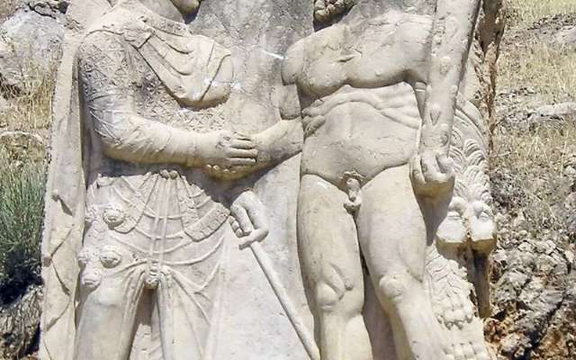

人類最古の記念碑的建造物から、ネムルト山の巨像、ハッランの円錐屋根の家、マルディンの石畳の通りまでを巡る4日間の旅です。
日目 1

シャンルウルファの北東にあるギョベクリテペは、人類の歴史に関する私たちの知識を変えた約1万1500年前の新石器時代の遺跡です。農耕や土器が広まる前に、狩猟採集民がT字形の巨大な石柱で円形の記念碑的な囲いを築きました。柱にはキツネ、イノシシ、ヘビ、ハゲワシ、サソリ、そして人の腕と手が刻まれており、柱が人の姿を表していることを示唆しています…

シャンルウルファの東、テクテク山地にあるカラハンテペは、ギョベクリテペと同時代の約1万1千年前の新石器時代の遺跡で、近隣の多くの新石器時代遺跡を対象とする「タシュ・テペレル（石の丘）」研究プロジェクトの中でも最も注目すべき遺跡のひとつです。岩を掘った構造物の中で、壁から現れる人の頭部と、それを取り囲む男根状の柱が豊かな象徴世界を示し、定…
シャンルウルファ考古学博物館はトルコ最大級の博物館複合施設のひとつで、新石器時代のコレクションは世界的に重要です。ギョベクリテペ、ネヴァル・チョリ、カラハンテペなど「石の丘」の遺跡からの出土品の中には、約1万1千年前の「バルクルギョル像」があり、知られている中で最古級の等身大の人物像です。ギョベクリテペの囲いの実物大の複製がその姿を示し…

シャンルウルファのハレプリバフチェ・モザイク博物館は、遊園地の建設中にバルクルギョル近くで偶然見つかったローマ時代の邸宅のモザイクを元の場所で展示しています。最も有名なのは、狩りをするアマゾネスの女王たちを描いたアマゾネス女王のモザイクです。アキレウスの生涯の場面や野獣狩りも、考古学博物館の隣にある現代的な建物の中の通路から見ることがで…

シャンルウルファ城は、街の南西、バルクルギョルを見下ろす岩山にそびえています。その象徴は、俗に「ニムロドの玉座」と呼ばれるローマ時代のコリント式円柱の一対で、伝説ではアブラハムはこの間に据えられた投石機で火の中に投げ込まれたといいます。岩を深く掘った堀が防御の堅さを示し、城壁からはバルクルギョルと旧ウルファの街並みを見渡すすばらしい夕景…
日目 2

シャンルウルファの南にあるハッランは、何千年も途切れることなく人が住み続けた世界最古級の都市のひとつとされています。古代メソポタミアでは月神シンの祭祀の中心地で、聖典にはアブラハムが暮らした場所のひとつとして登場します。中世には天文学、数学、医学の中心地となり、大モスクとメドレセの遺構がそれを伝えています。最も愛されているのは、暑い気候…
日目 3

標高約2,100メートルのネムルト山の山頂には、コンマゲネ王アンティオコス1世が紀元前1世紀に自らのために築いた聖なる墳墓があります。王は山頂を砕石による巨大な人工の墳丘で覆い、東西に儀式用のテラスを設けました。テラスには神々、王、鷲、獅子の巨大な像が並び、神々はギリシャ名とペルシャ名の両方を持っています。のちに地震で頭部が落ち、今日の…

アルサメイアはコンマゲネ王の聖地であり夏の離宮で、ネムルト山へ向かう道沿い、キャフタ渓谷を見下ろす斜面にあります。最も有名なのは、コンマゲネ王が英雄神ヘラクレスと握手する大きなレリーフで、王が神々に近い存在であることを力強く示しています。近くには岩をくり抜いた長いトンネルと、王国の宗教上の決まりを記した長大なギリシャ語碑文があります。丘…

アドゥヤマン博物館は、この地域のユーフラテス川沿いに暮らした文明を紹介しています。大規模ダム建設に先立って行われた緊急発掘によって、数千年にわたる集落の跡が明らかになり、その出土品の多くが展示されています。先史時代の石器、青銅器時代の土器、そしてとりわけコンマゲネ王国の彫刻、石碑、碑文が見どころです。ネムルト山の前後に訪れると、東西の文…
日目 4

マルディン博物館は旧マルディンの石造りの家々の間にあり、19世紀末にシリア・カトリック総主教座として建てられた優美な建物を使っています。黄色い石灰岩、アーケード、彫刻された石、メソポタミア平野を見下ろすテラスを持つ建物そのものが、博物館の見どころのひとつです。先史時代からイスラム時代まで、アッシリア、ウラルトゥ、ローマ、ビザンツ、アルト…

マルディンの南東にあるダラは、6世紀初めにビザンツ帝国がササン朝ペルシャに対抗して築いた強力な国境の駐屯都市でした。厚い城壁、塔、そして川を市内に通す水利施設を備え、二つの帝国の境にある要塞都市として設計されました。岩を掘った広大な地下貯水槽、地下牢と呼ばれる地下室、岩窟墓の大きな墓地を見ることができ、墓の一部は今も人が住む村の家々の間…
旅の計画に役立つ、日ごとのモデルコースです。所要時間は目安です。出発前に開館時間や道路状況をご確認ください。